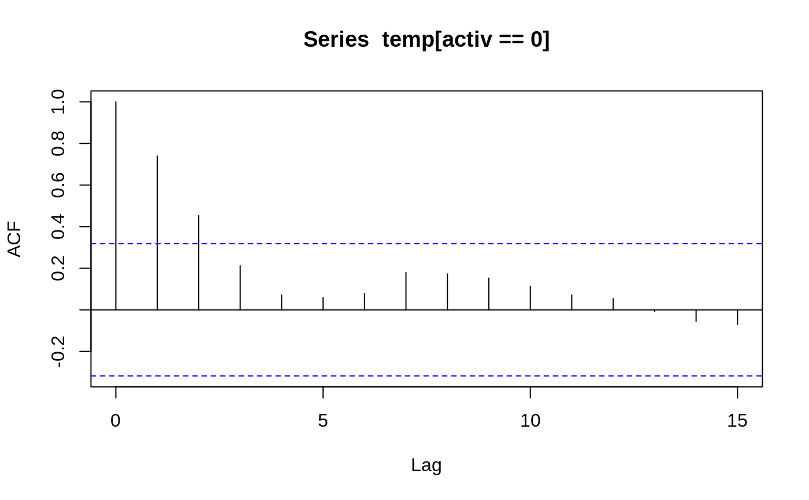
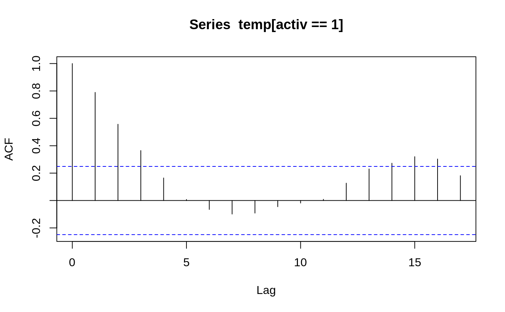

beav2.RdReynolds (1994) describes a small part of a study of the long-term temperature dynamics of beaver Castor canadensis in north-central Wisconsin. Body temperature was measured by telemetry every 10 minutes for four females, but data from a one period of less than a day for each of two animals is used there.
beav2
The beav2 data frame has 100 rows and 4 columns.
This data frame contains the following columns:
dayDay of observation (in days since the beginning of 1990), November 3--4.
timeTime of observation, in the form 0330 for 3.30am.
tempMeasured body temperature in degrees Celsius.
activIndicator of activity outside the retreat.
P. S. Reynolds (1994) Time-series analyses of beaver body temperatures. Chapter 11 of Lange, N., Ryan, L., Billard, L., Brillinger, D., Conquest, L. and Greenhouse, J. eds (1994) Case Studies in Biometry. New York: John Wiley and Sons.
Venables, W. N. and Ripley, B. D. (2002) Modern Applied Statistics with S. Fourth edition. Springer.
attach(beav2) beav2$hours <- 24*(day-307) + trunc(time/100) + (time%%100)/60 plot(beav2$hours, beav2$temp, type = "l", xlab = "time", ylab = "temperature", main = "Beaver 2")usr <- par("usr"); usr[3:4] <- c(-0.2, 8); par(usr = usr) lines(beav2$hours, beav2$activ, type = "s", lty = 2)temp <- ts(temp, start = 8+2/3, frequency = 6) activ <- ts(activ, start = 8+2/3, frequency = 6) acf(temp[activ == 0]); acf(temp[activ == 1]) # also look at PACFs#> #> Call: #> ar(x = temp[activ == 0]) #> #> Coefficients: #> 1 #> 0.7392 #> #> Order selected 1 sigma^2 estimated as 0.02011#> #> Call: #> ar(x = temp[activ == 1]) #> #> Coefficients: #> 1 #> 0.7894 #> #> Order selected 1 sigma^2 estimated as 0.01792#> #> Call: #> arima(x = temp, order = c(1, 0, 0), xreg = activ) #> #> Coefficients: #> ar1 intercept activ #> 0.8733 37.1920 0.6139 #> s.e. 0.0684 0.1187 0.1381 #> #> sigma^2 estimated as 0.01518: log likelihood = 66.78, aic = -125.55dreg <- cbind(sin = sin(2*pi*beav2$hours/24), cos = cos(2*pi*beav2$hours/24)) arima(temp, order = c(1,0,0), xreg = cbind(active=activ, dreg))#> #> Call: #> arima(x = temp, order = c(1, 0, 0), xreg = cbind(active = activ, dreg)) #> #> Coefficients: #> ar1 intercept active dreg.sin dreg.cos #> 0.7905 37.1674 0.5322 -0.282 0.1201 #> s.e. 0.0681 0.0939 0.1282 0.105 0.0997 #> #> sigma^2 estimated as 0.01434: log likelihood = 69.83, aic = -127.67library(nlme) # for gls and corAR1 beav2.gls <- gls(temp ~ activ, data = beav2, corr = corAR1(0.8), method = "ML") summary(beav2.gls)#> Generalized least squares fit by maximum likelihood #> Model: temp ~ activ #> Data: beav2 #> AIC BIC logLik #> -125.5505 -115.1298 66.77523 #> #> Correlation Structure: AR(1) #> Formula: ~1 #> Parameter estimate(s): #> Phi #> 0.8731771 #> #> Coefficients: #> Value Std.Error t-value p-value #> (Intercept) 37.19195 0.1131328 328.7460 0 #> activ 0.61418 0.1087286 5.6487 0 #> #> Correlation: #> (Intr) #> activ -0.582 #> #> Standardized residuals: #> Min Q1 Med Q3 Max #> -2.42080780 -0.61510520 -0.03573836 0.81641138 2.15153499 #> #> Residual standard error: 0.2527856 #> Degrees of freedom: 100 total; 98 residual#> Generalized least squares fit by maximum likelihood #> Model: temp ~ activ #> Data: beav2 #> Subset: 6:100 #> AIC BIC logLik #> -124.981 -114.7654 66.49048 #> #> Correlation Structure: AR(1) #> Formula: ~1 #> Parameter estimate(s): #> Phi #> 0.8380448 #> #> Coefficients: #> Value Std.Error t-value p-value #> (Intercept) 37.25001 0.09634047 386.6496 0 #> activ 0.60277 0.09931904 6.0690 0 #> #> Correlation: #> (Intr) #> activ -0.657 #> #> Standardized residuals: #> Min Q1 Med Q3 Max #> -2.0231494 -0.8910348 -0.1497564 0.7640939 2.2719468 #> #> Residual standard error: 0.2188542 #> Degrees of freedom: 95 total; 93 residual